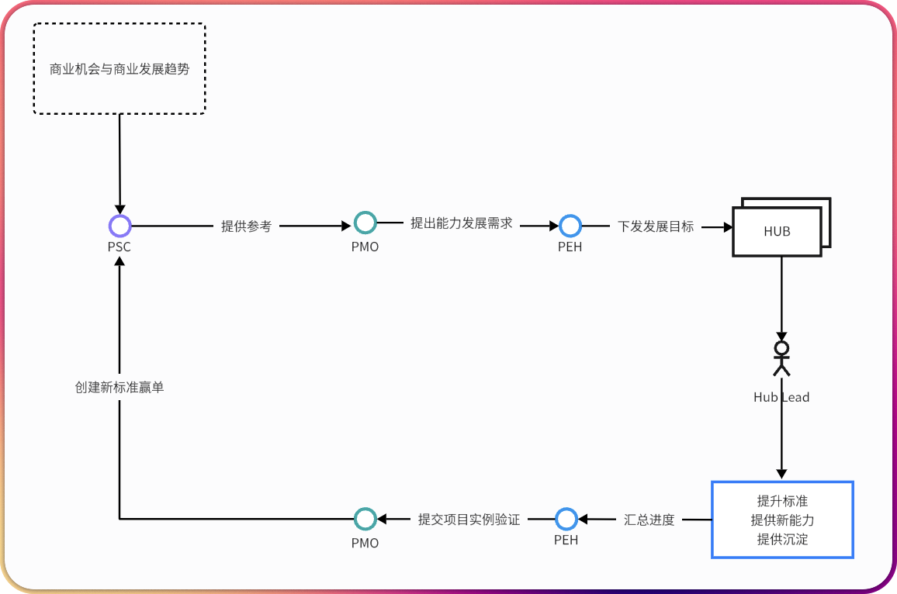

PEH核心职责
牵头制定岗位标准，并在项目中验证和持续迭代
- 明确"怎么做事、怎么做项目"的基本规范
- 通过真实项目实践验证标准有效性
- 基于PMO反馈不断精进标准，形成闭环
PEH与Hub工作流程

完整的标准制定、验证和改进循环，确保人才发展的持续性和有效性
Hub职责与人员归属
Hub Lead职责
Hub Lead并不是指传统意义的团队领导，而是负责本 Hub 技术先进性的推动与实现，具体的方法和实践由 Hub Lead 落实，可以寻求 Hub 内高级资源以及 PEH、PMO 的支持，同时总结本 Hub 内人员的贡献情况。
人员归属原则
依据个人的主要技术强项或者专精，从属于某个 Hub 但不限于只贡献于某一个 Hub，在每个 Hub 领域的贡献都会被统计贡献。
绩效分配机制
项目绩效
由PMO根据项目表现评定
如何获得成长绩效？
根据你的角色选择绩效获取路径
晋升考核
个人的晋升与调薪将严格按照既定标准执行，PEH主要负责组织考核与基于标准进行审核。每位同事可根据自身情况自主提出晋升或考核申请，考核结果将依据目标完成度和相关标准予以认定。
Hub Lead需定期(每半/月)向PEH汇报人员目标进度、风险，类似PMO对项目的管理